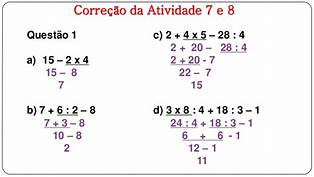
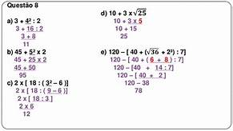

1.Operações simples.
2.Operações com simbolos.
3.Operações avançadas.
4.Exercícios.
Operações simples.
Expressões numéricas são um conjunto de operações, onde para chegar corretamente a um resultado é necessário resolvê-la em uma determinada ordem. Tal ordem sendo:
|  |
Ao lado temos exemplos deste tipo de conta. |
Operações com símbolos.
Pode ocorrer, em uma situação de expressão, mais que uma operação com a mesma prioridade. Quando acontecer, a expressão deve ser resolvida em linha (da esquerda para a direta).
Podemos perceber, em expressões mais avançadas que, juntos com as operações, temos símbolos, entres eles, parênteses, colchetes e chaves, onde obrigatóriamente seguem uma ordem para serem resolvidas, assim como todo o processo da resolução da conta.
|  |
|
Esses exemplos, foram de expressões simples, onde em resumo, o necessário é resolver as contas em ordem, como nas operações simples primeiramente temos Potenciação e radiciação, depois Multiplicação e divisão e por fim, Adição e subtração. Não esquecendo também da regra com os simbolos, sendo parênteses,chaves e por último, colchetes.
Operações avançadas.
Para a conclusão deste trabalho, iremos explicar como são realizadas as equações de 1° grau, e por fim, a inclusão de exercícios a respeito das operações citadas anteriormente.
Equações de primeiro grau são fáceis de se realizar, onde temos que saber interpretar o que se pede. As equações estabelecem igualdade entre termos conhecidos e desconhecidos, sendo assim composta por números e incógnitas.
O objetivo desta operação é sempre achar o valor do termo desconhecido, incógnita, representado por letras. Quando temos um número acompanhado da letra, temos que resolver um lado da conta primeiro, sendo este o com termos semelhantes. Após a resolução, temos que passar o número para onde outro número se encontra, passando para o outro lado da igualdade fazendo a operação inversa.
Exercícios.
Já que você aprendeu um pouco mais sobre equações e expressões numéricas, abaixo deixarei alguns exercícios para treino!
2. Os professores de determinada escola precisavam fazer a contagem dos alunos vencedores dos jogos internos a fim de adquirir as medalhas para premiação. No sexto ano, são 50 alunos no total. Apenas a quinta parte deles recebeu medalhas no vôlei, e a metade recebeu medalhas no futebol. No sétimo ano, com 30 alunos, apenas as meninas, que representam um terço dos alunos da sala, foram premiadas no vôlei e todos os meninos foram premiados no futebol. Já no oitavo ano, foram 7 medalhas de ouro, 4 de prata e 3 de bronze. Por fim, o nono ano não participou da competição.Quantas medalhas foram compradas? Aqui encontram-se mais questões como esta.
Considere dois números inteiros, a e b, consecutivos e positivos. Qual das expressões abaixo corresponde necessariamente a um número par?